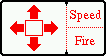
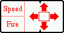

|
If you own a Palm M505 or M515 you might install RumbleLibM50x.prc as well. This library provides some API to the rumble/vibration alarm unit inside these machines and will allow you to experience some kind of force feedback during the game. Please read the readme.txt of the rumble lib for more details on this.
The Hard Keys can be configured for right and left handed layout:
|  |  |
| Right handed layout | Left handed layout |
By using the Silkscreen joystick panel the direction input can be reconfigured to match the needs of special input devices attached to the graffiti area.
If the shields are down, damage directly affects the enery.
Damaged shields are recharged from the energy banks.
Fuel is available in all space stations. If the ship is equipped with fuel scoops, fuel can be taken from solar radiation by flying at high speed as close to the sun as possible without damaging the ship (see Cabin Temerature).
No fuel is required for flying in intersolar distances and during
inter-galactic hyperjumps.
Cabin Temperature
The cabin temperature depends on the ships distance to the
sun. If the temperature gets too high, the ship takes serious
damage. Extremely caution is required while approaching the sun
for fuel scooping.
Laser Temperature
The ships lasers are very powerful devices and require a seperate
cooling system. If continuously fired, the cooling system will be
unable to keep the laser temperature low. If the laser temperature
exceeds the maximum value, the laser fire rate is reduced to prevent
damage.
Since all lasers use the same cooling system, all lasers are affected simultanously.
Only one missile can be armed and locked onto a target at once.
Status Indicator
This device indicates whether the ship is within the range of a
space station (indicated by a green S) or if the E.C.M system
hast been activated (indicated by a red E).
A green (or light) light in the center of the compass indicates the station or planet being directly in front of the ship. A red (or dark) light indicates, that the station or planet is exactly behind the ship.
| Color Display | Grayscale Display | Meaning |
| green | black/none | clean (no object within radar range) |
| yellow | dark | object within radar range |
| red | light | object within radar range and energy low |
This powerful instrument allows the pilot to determine the position of a object in all three axes.
Energy is automatically refilled at a certain rate. The refill rate can be increased with an additional energy unit.
The maximum amount of cargo that can be carried on board the Cobra Mk3 is 20 tons. This capacity can be increased to 35 tons with an additional cargo bay. While most items are sold in quantities of tons and will fill up the cargo may very fast, some items like gem stones are sold in gramm or kilogramm units. These light items are not stored in the main cargo bay and can be traded in huge amounts. Items are bought and sold in the market screen activated by the market icon . Tap the green arrows to move cargo from the station stock to your ships cargo bay and the red arrows to return items from the ship to the station. |
In order to purchase an additional item for your ship, select the equip icon and tap the corresponding white entry in the equipment table. Entries displayed in red are still missing on your ship, but are still too expensive. Green items are already equipped. The additional equipment items available are: FuelFuel does not really qualify for additional equipment. Fuel is required to operate the hyperspace engines and is available on every space station. The Cobra Mk3 can hold fuel for up to 7.0 light years.MissilesYour Cobra Mk3 comes equiped with three missiles. Each missile can only be used once. At most four missiles can be installed on your ship at once.The use of missiles includes three steps: First the missile has to be armed using the icon (as an alternative, Sony Clie users may use the jog dial to arm a missile, PalmGamePad users may use the left fire button). The fact, that a missile is armed is indicated by a red target circle in the main 3d view. An armed missile is locked onto the first target, that appears in the target circle. A armed or targeted missile can be disarmed at any point using the same techniques that were used for arming the missile. A targetted missile is launched with the fire button. Pulse LaserOne of these very reliable devices is initially installed on the front mounting only. Additional lasers for rear and side mounting can be installed.Pulse lasers are available on planets with tech. level 3 or above for 400 Credits each. Beam LaserBeam lasers are more advanced and powerful (and expensive) devices than pulse lasers. Once you become experienced (and wealthy) enough, you can all four mountings on your ship with this fine piece of technology.Beam lasers are available on planets with tech. level 4 or above for 1000 Credits each. Military LaserMilitary lasers are the most sophisticated pieces of technology, you can equip your ship with. These are devices to spread fear over the galaxy.Military lasers are available on planets with tech. level 10 or above for 6000 Credits each. Mining LaserMining lasers are special devices required for asteroid mining. Equip your ship with at least one mining laser and fuel scoops to fragment asteroids into small pieces which can then be taken into the cargo bay using the fuel scooping mechanism.
Mining lasers are available on planets with tech. level 10 or above for
800 Credits each.
The large cargo bay is available on all planets for 400 Credits.
The ECM System is available on planets with tech. level 2 or above for
600 Credits each.
Fuel Scoops are available on planets with tech. level 5 or above for
525 Credits each.
Docking computers are available on planets with tech. level 9 or above for
1500 Credits.
Since your police record is tied to a unique marker on your ships hull, the replacement ship will cause your police record to be cleared.
Escape Capsules are available on planets with tech. level 6 or above for
1000 Credits.
Energy bombs are available on planets with tech. level 7 or above for
900 Credits.
Extra Energy Units are available on planets with tech. level 8 or
above for 1500 Credits.
Galactic Hyperdrives are available on planets with tech. level 10 or above for 5000 Credits. |